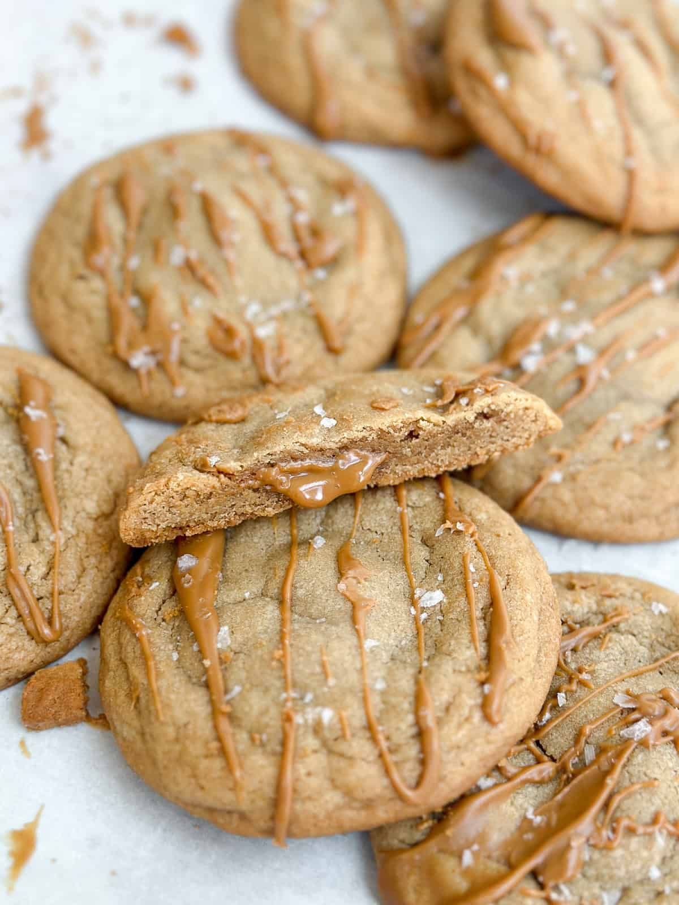

Biscoff Cookie Butter Cookies

These biscoff cookie butter cookies are meant for all you biscoff lovers. They are loaded with so much flavor from the cookie butter in the dough, and the melty cookie butter filling.
Ingredients:
- Cookie Butter- 13 teaspoons, ½ cup (118.29 g), & 2 tablespoons
- Salted Butter- ½ cup (113.5 g)
- Sugar- ⅓ cup (66.67 g)
- Salt- ½ teaspoon (0.5 teaspoon)
- Brown Sugar- ½ cup (110 g)
- Eggs- 1 large egg
- Vanilla- 2 teaspoons
- Baking Soda- ½ teaspoon (0.5 teaspoon)
- Flour- 1½ cups (210 g)
- Flaked Salt
Step By Step
- Scoop 13 one teaspoon size balls of biscoff cookie butter onto a piece of parchment or wax paper and place into the freezer to freeze.
- Place butter and ½ cup of biscoff cookie butter in a medium bowl and mix together until smooth. Add both sugars and mix again until light and fluffy. Add egg and vanilla and mix in.
- Add salt, baking soda and flour to the bowl and mix on low, being careful not to over mix. I usually like to stop mixing when I still have flour remnants around the bowl.
- coop the dough into large balls, I like to use a 3 tablespoon cookie scoop. Take the frozen cookie butter balls out of the freezer. Push cookie butter balls into the cookie dough, making sure to completely cover with cookie dough.
- Roll the dough into balls. Place 6-7 cookies on a baking sheet.
- Bake the cookies for 11-13 minutes, or until golden brown along the edge. Melt 2 tablespoons of cookie butter in the microwave for 15-20 seconds. Drizzle on baked cookies and sprinkle with some flaked salt. Allow to cool/set.
Expert Baking Tips
These are also great without the cookie butter center if you just want a simple biscoff flavored cookie. If your cookies don't come out in a perfect circle I like to run a spoon or spatula around the rim right out of the oven to help shape them. I have given both cups and grams as measurements. Grams will be more precise, especially when measuring flour. If you don’t have a kitchen scale, no problem! Just lightly spoon flour into your measuring cup to insure its not packed in there. Light and fluffy is the key.
Explore More
Here